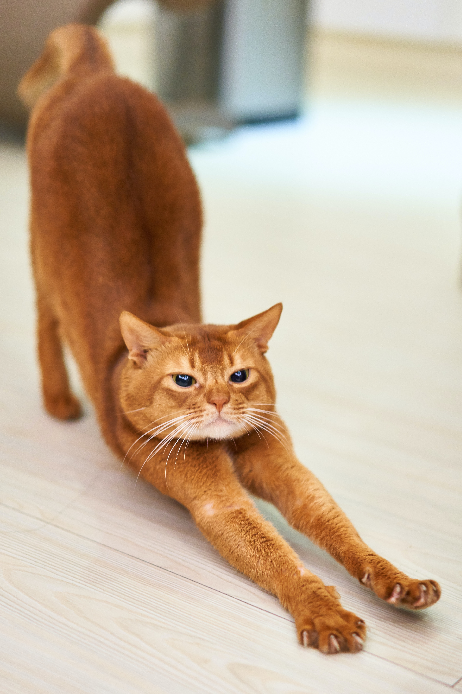
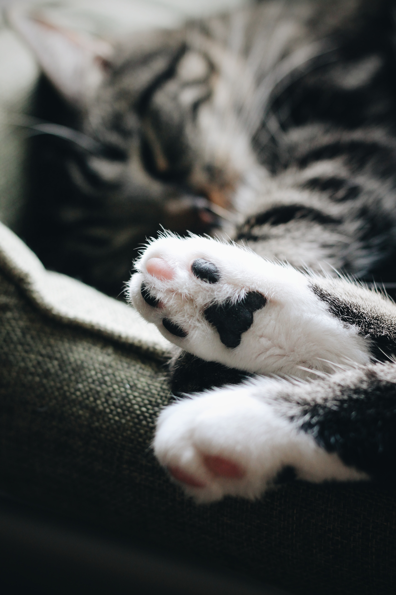

História e Cultura
A história dos gatos é uma narrativa rica e fascinante que se entrelaça com os seres humanos ao longo da evolução. Os primeiros discursos de domesticação de gatos remontam há milhares de anos, com registros em civilizações antigas como o Egito.
Em todo o mundo, os gatos têm sido retratados na arte, na literatura e na mitologia e sua influência na cultura humana é evidente em lendas, histórias e representações em vários formatos de mídia. Atualmente, os gatos são apreciados por sua companhia, habilidades de caça e comportamento intrigante, tornando-se animais de estimação queridos em muitas culturas.
Evolução humana com os gatos
- No Egito Antigo os gatos eram venerados e considerados animais sagrados. Eles eram associados à deusa Bastet, a deusa da casa, da fertilidade e da maternidade. O sacrifício de um gato, mesmo acidental, era punido com pena de morte.
- Na Roma Antiga os gatos eram apreciados por sua habilidade de caçar roedores e insetos. Eram utilizados no controle de pragas e proteção de alimentos.
- Na Idade Média os gatos eram, em alguns casos, considerados suspeitos de bruxaria e superstição, o que levou a perseguições e mortes. No entanto, ao longo dos séculos, os gatos gradualmente recuperaram seu status e foram reconhecidos.
- No Japão os gatos têm uma presença especial na cultura. Eles são frequentemente representados como seres mágicos, trazendo sorte e prosperidade para seus proprietários. O "maneki-neko", ou o "gato da sorte acenando", é uma figura comum em lojas e casas, acreditando-se que traga boa sorte e florestas.


Características e Comportamento
Os felinos têm muitas características únicas e comportamentos peculiares, tornando-os companheiros de vida verdadeiramente especiais. Entender as características e os comportamentos dos gatos não apenas enriquece nossa relação com eles, mas também nos ajuda a fornecer um ambiente que atenda às suas necessidades físicas e emocionais.
Características
- Independência: ao contrário de muitos animais de estimação, os gatos não precisam de atenção constante e são capazes de cuidar de si mesmos. Essa autossuficiência se reflete na habilidade de tomar decisões, escolhendo seus donos e os momentos em que desejam interagir.
- Elegância Natural: postura ereta, movimentos graciosos e pelagem bem cuidada conferem aos gatos uma aura majestosa. Os olhos de um gato, muitas vezes são bem expressivos e penetrantes.
- Agilidade: com a capacidade de saltar para alturas surpreendentes e mover-se com rapidez, eles são verdadeiros atletas naturais e excelentes caçadores. Seu comportamento de caça, seja em busca de uma bolinha de papel ou perseguindo uma presa imaginária, é uma demonstração de suas habilidades físicas.
- Personalidade única: cada gato tem uma personalidade distinta, alguns são extrovertidos e afetuosos, enquanto outros são mais reservados e independentes. Isso torna cada gato especial e único, bem como a convivência com esses animias se torna cativante.
- Sistema sensorial apurado: gatos possuem visão noturna excelente, audição sensível e um olfato apurado. Esses sentidos aguçados são essenciais para suas habilidades de caça e exploração. 
- Garras retráteis: as garras podem ser recolhidas quando não estão em uso, ajudando a mantê-las afiadas para caçar e se proteger.
- Caçadores natos: mesmo os gatos domesticados mantêm seus instintos de caça, brincando com brinquedos e caçando insetos. Essas habilidades instintivas são uma parte essencial de sua natureza.

Comportamnetos
- Brincadeiras e exercícios: os gatos são criaturas muito brincalhonas e exploradoras, uma vez que brincar é uma parte importante de suas vidas. Eles também são excelentes caçadores de brinquedos, demonstrando agilidade e destreza em suas atividades lúdicas.
- Hábitos noturnos: os gatos são animais crepusculares, o que significa que são mais ativos ao amanhecer e ao anoitecer. Esse comportamento pode ser atribuído aos ancestrais selvagens dos gatos, que caçavam com mais eficácia durante esses períodos do dia.
- Marcar território: gatos têm uma tendência natural a marcar território esfregando a cabeça, patas e corpo em objetos, incluindo seus donos, como uma maneira de deixar seu cheiro e reivindicar pertencimento. Também pode marcar com urina para comunicar informações a outros gatos.
- Ronronar e vocalizações: os gatos se comunicam de várias maneiras, desde miados e ronronados até linguagem corporal e expressões faciais. Cada vocalização e gesto têm um significado próprio, permitindo que os gatos expressem suas necessidades e emoções de maneira única. De maneira geral, ronronam quando estão felizes e relaxados, mas também podem miar, chiar ou rosnar em diferentes situações.
- Linguagem corporal sutil: os gatos comunicam emoções e interesses principalmente por meio de linguagem corporal. A posição da orelha, a posição da cauda, o arqueamento das costas e o movimento da pelagem são todos sinais que revelam o que o gato está sentindo. Aprender a ler esses sinais é fundamental para compreender o estado de espírito de um gato.
- Autolimpeza: os gatos passam uma parte significativa do seu tempo lambendo e acicalando sua pelagem, garantindo que ela permaneça impecável.


Cuidados e Bem-estar
Para o bem-estar de um gato, é necessário lembrar sempre que cada gato é único, assim é essencial observar seu próprio gato para entender suas necessidades específicas. Proporcionar cuidados e bem-estar adequados é um ato de amor que fortalece a relação entre você e seu amigo felino, garantindo que ambos tenham uma vida feliz e saudável.
Cuidar de um gato vai além de oferecer comida e um lugar aconchegante para descansar. É um compromisso de fornecer um ambiente saudável e amoroso que atenda às necessidades físicas e emocionais dessas criaturas encantadoras. Vamos explorar alguns dos aspectos essenciais dos cuidados e bem-estar dos gatos.
- Alimentação adequada: alimentação é fundamental para a saúde de um gato, bem como uma dieta equilibrada e adequada para a idade e estado de saúde do seu gato. Consultar um veterinário para orientação é sempre uma boa prática, mas de maneira geral evite alimentação em excesso, que pode levar à obesidade, e mantenha sempre água fresca à disposição.
- Ambiente seguro: certifique-se de que o ambiente seja seguro para o gato. Isso inclui a remoção de plantas tóxicas, produtos químicos perigosos e objetos pequenos que possam ser engolidos e garantir que as janelas e varandas sejam seguras para evitar quedas.
- Atividade física e estimulação mental: os gatos precisam de exercícios e estimulação mental para se manterem saudáveis e felizes. Brinquedos interativos, sessões de brincadeiras e áreas para escalada podem ajudar a satisfazer suas necessidades de atividade.
- Higiene e limpeza: os gatos são notoriamente limpos, mas eles podem precisar de ajuda em sua rotina de higiene. Escove a pelagem regularmente para evitar emaranhados e bolas de pelos. Além disso, forneça uma caixa de areia limpa e troque-a com frequência.
- Cuidados veterinários regulares: consultas regulares ao veterinário são essenciais para manter a saúde do seu gato. Além disso, certifique-se que seu gato está atualizado com vacinas e tratamentos contra parasitas.
- Companhia e carinho: os gatos são animais sociais que podem estabelecer laços profundos com seus donos, assim dedique tempo para brincar, acariciar e interagir com seu gato. A qualidade do tempo que você passa com ele é tão importante quanto a quantidade.
- Cuidado com a saúde mental: gatos podem sentir estresse e ansiedade, e é importante proporcionar um ambiente seguro e tranquilo. Garanta que eles tenham um local tranquilo para descansar e se refugiarem quando desejarem.
Curiosidades
Como já visto, os gatos, com seu comportamento misterioso e personalidades únicas, são criaturas repletas de segredos e curiosidades que cativam a imaginação de todos. Vamos explorar algumas das curiosidades mais intrigantes sobre esses adoráveis felinos, revelando um mundo mágico. Cada dia com um gato é uma oportunidade de descobrir algo novo e especial sobre esses companheiros peludos.
- Tempo de sono: gatos são mestres do cochilo, pois passam cerca de 70% de suas vidas dormindo, o que equivale a 12-16 horas por dia. Isso é resultado de seus instintos de caça, pois precisam economizar energia para perseguições ágeis.
- Mordidas de amor: quando os gatos mordiscam gentilmente seus donos, é uma demonstração de afeto. Essas "mordidas de amor" são sinais de carinho e estão relacionadas ao comportamento de amamentação de filhotes. 
- Barba de gato: os gatos têm pelos chamados
barbas de gato
localizadas na parte de trás das patas dianteiras. Esses pelos servem para sentir o ambiente e as texturas, o que é útil para explorar o mundo. - Sentido de orientação: os gatos têm um notável senso de orientação e são capazes de encontrar o caminho de volta para casa a partir de grandes distâncias, muitas vezes utilizando sua bússola interna e sentindo campos magnéticos da Terra.